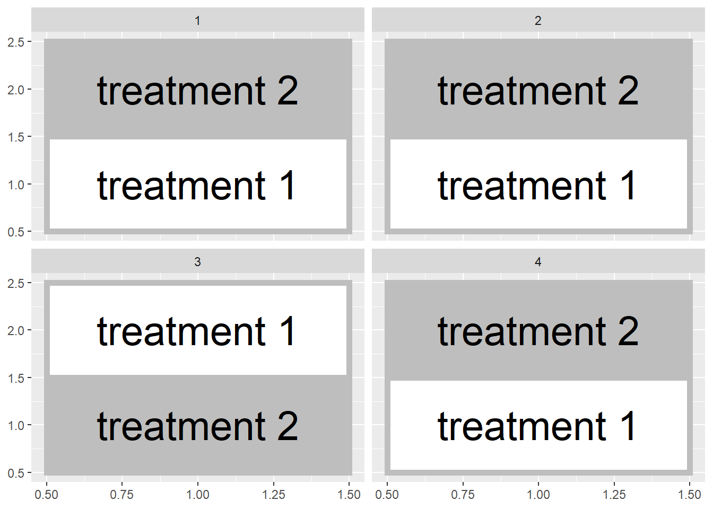
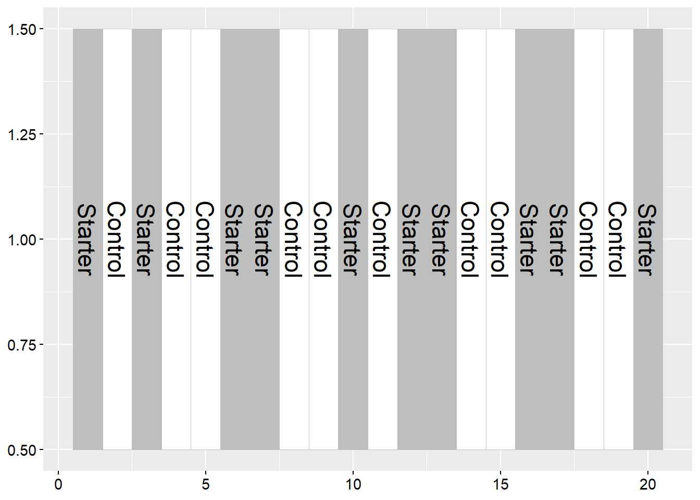
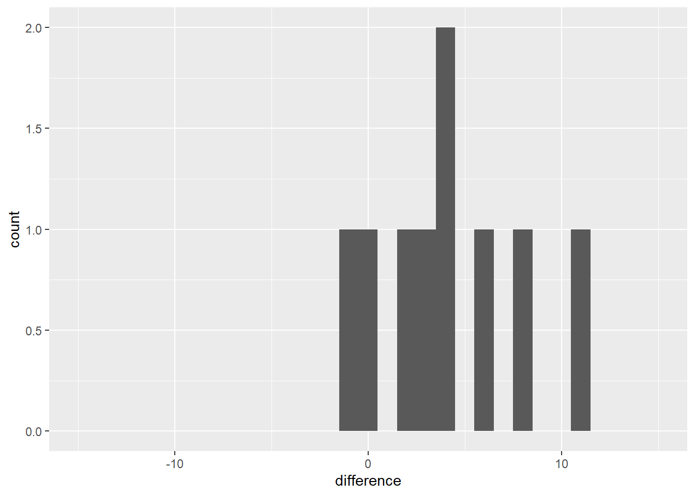

Chapter 4 Two-Treatment Comparisons
Until now, we have worked with a single population. To recap our progress: - In Unit 1, we defined a population. We learned it was the complete group of individuals which we wanted to describe or for which we wanted to make a prediction. We learned how to describe the center of this population with the population mean, and how to describe its spread using the sum of squares, variance, and standard deviation. - In Unit 2, used the normal distributionto describe the pattern with which individuals are spread in many populations: individuals with values closer to the population mean were expected to be observed much more frequently that individuals with values that were more extreme. We learned to use probability toe quantify the likelihood of encountering an invididual within a particular range of values. - In Unit 3, we used samples, subsets from a population, in place of measuring each individual in that population. We saw how sample means were distributed normally, from both normally- and non-normally distributed populations. The standard error was used to describe the spread of individual samples around the sample mean. The distribution of sample means was described by the t-distribution, which was shorter and wider when the number of samples was low, and taller and narrower when the number of samples was greater.
4.1 Side-by-Side Trials
In this unit, we will finally put our statistical knowledge to work to test treatment differences. We will work with a simple but important experimental design – the two-treatment comparison. Here in Ohio, this is referred to as a “side-by-side” trial, but you may have a different term for it where you work. If you work for or in support of an agronomy retailer, you have probably conducted these trials. Typically, you would split one or more fields into treated and untreated fields. For example, you might “stripe” and individual field with treated and untreated areas:

Or, you might divide multiple fields in half like this:

In either case, however, a side-by-side deals with two treatments and can be easily analyzed using a t-test. In these next two units we will compare different designs for side-by-side (or paired) trials, use Excel and R to randomly assign treatments, understand how the t-distribution allows us to test for significance, and run these tests in R.
4.2 Blocked Design
In Unit 1 we learned the hallmarks of a designed trial are the randomzation and replication of treatments. Each treatment should be observed several times in different experimental units. Often in our work “experimental unit” is a fancy word for a plot, half a field, or a pot.
Observing the treatment several times has two benefits. First, the average of those observations – the sample average – wil likely be closer to the true population average for that treatment than the individual observations. Second, variation among the observations can be used to give us a sense how much environmental factors outside, in contrast with our treatment, cause our observations to vary.
It is also important to randomize treatments in order to avoid intentional or unintentional biases that might skew our interpretation of results. For example, one treatment might be biased by always putting it to the north of another treatment or, more insiduously, always putting it in the better half of a field. Deliberate randomization reduces the probability of either scenario.
That said, reality often intervenes intervenes. Soil types change across a field, as do microclimates around field edges, management histories, etc. Though randomization will reduce the likelihood that treatments are concentrated in one of these areas, it may not result in as even a distribution of treatments across the experimental area as we would like. Even with randomization, we could conceivably with all the treatments in one half of the field:


Or, if we are using multiple fields, both halves of a field could receive the same treatment in a randomized design

Blocked experimental designs, place a restriction on the random assignment of treatments to plots. Instead of assigning treatments randomly within a field or across a state. We instead force both treatments to occur within a field section or in the same field, so that our treatment maps look more those we showed in the first two figures of this unit.
Here is another way to think about this. Our statistical test this week is based on comparing two populations. Each population will receive a different treatment. We want to design our experiment so that aside from the treatment, the two populations are as identical as possible. The blocked approach, in general, helps create two populations that are similar.
4.3 Case Study
An in-furrow corn starter (6-24-6 plus proprietary micronutrients) was tested against a control (no -starter) in a trial in western Ohio. Treatments were blocked (paired) so that each treatment occurred once per block. Plot numbers are given on the x-axis of the map below. There were 10 blocks. The data are in a data.frame named “corn_starter”.

Examine the corn_starter data.frame using the “head” function.
## block plot treatment yield
## 1 1 11 Starter 193.4
## 2 1 12 Control 194.2
## 3 2 21 Starter 192.2
## 4 2 22 Control 189.0
## 5 3 31 Control 193.8
## 6 3 32 Starter 194.2Note the column headings: “trt” refers to the treatment level (Control or Starter) and “value” refers to the measured yield.
Let’s make a quick histogram plot of the data using ggplot. For the first time, in this unit, we are working with two populations: one which received no starter (the control), and another which received starter. So we will have separate histograms for both populations.
## `stat_bin()` using `bins = 30`. Pick better value with `binwidth`.
In the above code, ggplot launches the function to plot our data. Also on the first line, “aes” specifies the “aesthetics” to be plotted – these are the variable(s) that define where objects are positioned in the plot. In this case, yield determines which bin an observation is placed into, so x=value.
The next line tells R to draw a histogram.
The last line tells R to construct a series of plots, one for each level of treatment. This way, we can compare the distribution of the Control population with that of the Starter population.
The mean yield of the population that population that received starter is greater than the center of the population that received the control (no starter).
## # A tibble: 2 x 2
## treatment yield
## <chr> <dbl>
## 1 Control 190.
## 2 Starter 196.Another way to look at this would be to create a new population from the differences between starter and control within each pair.

This can be confusing, so let’s slow it down. We created a new population by subtracting the yield of the control plot from the yield of the starter plot in each pair. In this new population, individuals with a positive value indicate a block where the starter outyielded the control. Individuals with a negative value indicate a block where the control outyielded the starter. We will now work with this new population of differences.
We see most of the individuals in this new population are greater than 0. The population mean is 5.6 bushels/acre. What we want to know is: given the mean we observed (5.59 bushels/acre) and the distribution of this population, what is the probability, were we to repeat the trial, that the population mean would be zero.
A population mean of zero would mean the starter yield and control yield were the same, i.e. there is no difference between the starter and control.
4.4 Confidence Interval
We can use a confidence interval to determine whether the range of values we are likely to observe includes zero. Recall, to calculate the confidence interval we need two values: the minimal t-value that is associated with our degrees of freedom and encompases 95% of our population, and the standard error of the difference.
We calculate the minimal t-value using the qt function in R.
Remember, degrees of freedom is equal to n-1. Our new population has 10 degrees of freedom, thereofre, df equals 9 above.
We also need to know the standard error of the population. Given our population is composed of treatment differences, we will call this statistic the standard error of the difference.
In the code above, we first calculated the standard deviation, sd, of of our differences. We divided the standard deviation by the square root of the number of observations to get the standard error of the difference. Our population mean is 5.59 and the standard error of the difference is about 1.71 We additionally calculated pop_mean, the mean of our population.
We can now calculate the confidence interval, using min_t and sed:
upper_limit = pop_mean + (min_t * sed)
lower_limit = pop_mean - (min_t * sed)
CI = paste(lower_limit, upper_limit, sep=",")
CI## [1] "1.72421086829983,9.45578913170016"The 95% confidence interval ranges from 1.72 to 9.46 bushels per acre and, notably, does not include zero. Since zero is outside the 95% confidence interval, there is greater than a 95% probability the population mean is not equal to zero. Another way of saying this is there is less than a 5% probability that the population mean is equal to zero. Or, finally, the population mean is significantly different from zero at the 5% (or 0.05) level.
Going our population was composed of the difference of starter and control, we can say the starter effect is significantly different from the control at the 5% level.
4.5 T-Test
An alternative to the confidence interval is the t-test. The first step of the t-test is to calculate our observed t-value:
\[ t = \frac{\bar{x} - \mu}{SED} \] Where \(\bar{x}\) is the observed population mean, \(\mu\) is the hypothesized population mean (usually 0, meaning no treatment difference), and \(SED\) is the standard error of the difference.
In our example above:
\[ t = \frac{5.59 - 0}{1.71} = 3.27\]
Our observed t-value is about 3.27. If there were no difference between the starter and the control, of course, t would be equal to zero. So there is a difference between our observed mean and zero of \(t=3.27\). Using R, we can quickly calculate the probability of observing a value \(t=3.27\) above – or below our population mean of 5.59.

Note that this time with this function we used the argument “lower.tail=TRUE”. This tells R to calculate the probability of values futher than \(t=3.27\) both above and below the mean.
Again there were 10 observed differences in our population, so there were 9 degrees of freedom. The value that is returned is the probability the population mean is actually zero, given the population mean. The probability of this t-value (sometimes abbreviated as \(Pr \ge \lvert t \lvert\)) is very low, less tan 0.01, or 1%.